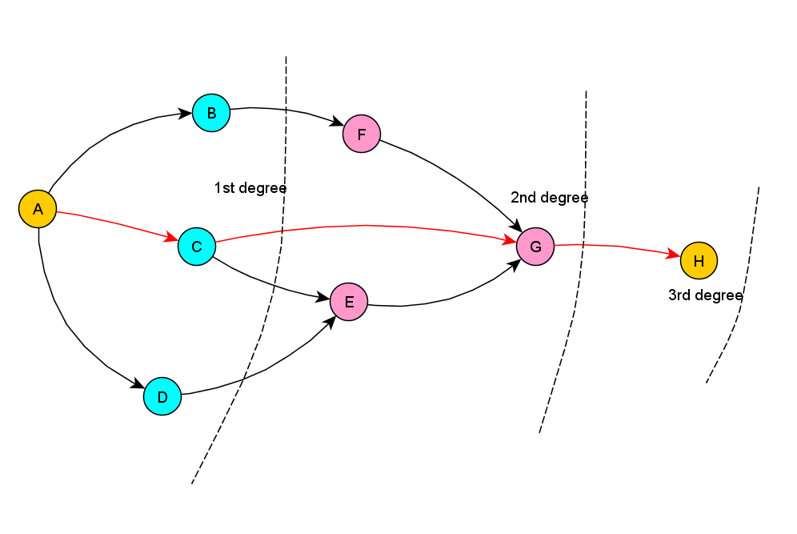
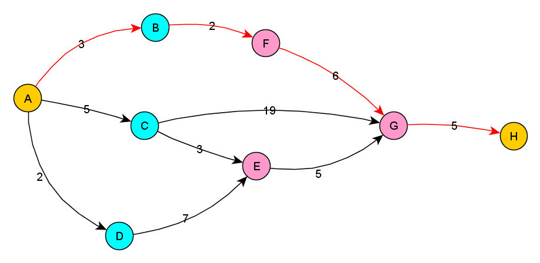
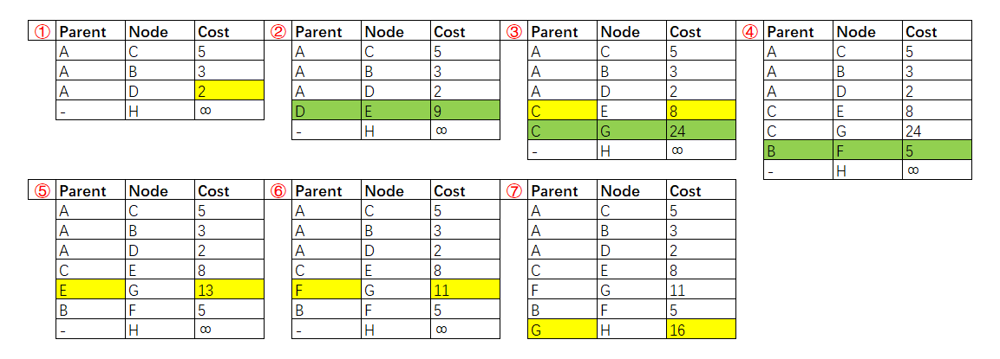

Graph and Greedy algorithms
Breadth-first search
- Breadth-first search is used to calculate the shortest path for an unweighted graph.
- And answer the following questions:
- Question type 1: Is there a path from node A to node B?
- Question type 2: What is the shortest path from node A to node B?
A->H, with breadth first search, the shortest path is A->C->G->H
Caution: once you check someone, make sure you don’t check them again. Otherwise, you might end up in an infinite loop.
Dijkstra’s algorithm
- Dijkstra’s algorithm is used to calculate the shortest path for a weighted graph.
- Dijkstra’s algorithm works when all the weights are positive.
- If you have negative weights, use the Bellman-Ford algorithm.
- Same graph as shown above but with weighted value(the cost of the path), A->H, we will get another path(A->B->F->G->H):
 - Dijkstra’s algorithm iteration for the above graph:

Gready algorithm
- Typical applicated case, NP(nondeterministic polynomial time)-complete problems:
- The knapsack problem
- The set-covering problem
- Traveling salesperson
- Approximation algorithms, NP-complete problems, how can you tell if the problem is a NP-complete problem:
- Your algorithm runs quickly with a handful of items but really slows down with more items.
- “All combinations of X” usually point to an NP-complete problem.
- Do you have to calculate “every possible version” of X because you can’t break it down into smaller sub-problems? Might be NP-complete.
- If your problem involves a sequence (such as a sequence of cities, like traveling salesperson), and it’s hard to solve, it might be NP-complete.
- If your problem involves a set (like a set of radio stations) and it’s hard to solve, it might be NP-complete.
- Can you restate your problem as the set-covering problem or the traveling-salesperson problem? Then your problem is definitely NP-complete.